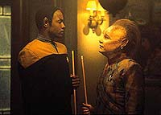
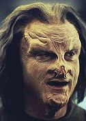
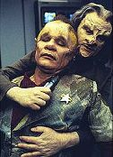
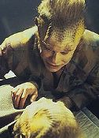

|
MANCHETE
DO EPISDIO
Episdio
faz o impossvel e explora
potencial dramtico de Neelix
Episdio
anterior | Prximo
episdio
Sinopse:
Data Estelar: 48832.1.
Neelix fica horrorizado quando um
Haakoniano chamado Ma'Bor Jetrel contata a USS Voyager e pede para
conhec-lo. Os Haakonianos lutaram em uma longa e destrutiva guerra
contra os Talaxianos. Jetrel o cientista que ajudou a conquistar
Talax ao desenvolver a cascata metreon, uma arma poderosssima que
matou mais de 300.000 pessoas na lua Talaxiana Rinax, incluindo a
famlia de Neelix. Mas Jetrel diz que veio para examinar Talaxianos
como Neelix, que ajudaram a evacuar os sobreviventes de Rinax, e que
no processo se expuseram a altas concentraes de istopos de
metreon. Embora considere Jetrel um monstro, Neelix concorda em ser
examinado, e informado que possui uma doena sangnea fatal.
 Mais
tarde, Jetrel convence Janeway a visitar o sistema Talaxiano. Usando
os sistemas de transporte da nave, Jetrel acha que pode desenvolver
uma cura coletando amostras da nuvem de metreon que ainda envolve
Rinax. Janeway concorda, mas Neelix ainda est enraivecido. Ele
condena amargamente Jetrel pela devastao que causou,
descobrindo, depois, que o cientista tambm portador da doena
e tem apenas alguns dias de vida.
A chegada da nave a Rinax abre velhas
feridas em Neelix. Ele confessa a Kes que mentiu durante anos ao
dizer que fazia parte das foras de defesa Talaxianas. Ele nunca se
apresentou; ao contrrio, passou a guerra se escondendo em Talax.
 Mais
tarde, Neelix procura Jetrel, mas encontra o Doutor desativado e
Jetrel conduzindo secretamente experimentos no laboratrio. Neelix
tenta alertar Janeway, mas o cientista o deixa inconsciente.
Jetrel se dirige para a sala de
transporte, onde confrontado pela capit. Ele pede a Janeway que
lhe permita concluir seu trabalho e trazer de volta as vtimas
Talaxianas de Rinax. Ele aredita que pode usar o transporte para
regenerar os restos dissociados e confessa que veio Voyager como
um pretexto para usar os transportes; na verdade, o diagnstico de
Neelix era falso.
Janeway permite que Jetrel continue,
mas o experimento improvvel falha. O cientista ento cai, sabendo
que nunca poder se redimir. Neelix faz uma ltima visita a Jetrel
e lhe diz que est perdoado, permitindo que o Haakoniano morra com
um pouco de paz.
Comentrios:
"Jetrel"
consegue uma proeza: pela primeira vez, Neelix utilizado como
personagem dramtico. At ento, seu uso no passava de um alvio
cmico para situaes mais crticas vividas por outros
personagens.
Aqui Neelix o centro das atenes, e Ethan Phillips no perde
a oportunidade de desenvolver o personagem. A audincia aproveita o
drama do Talaxiano para aprender mais sobre a histria de sua espcie.
 Todo
o pano de fundo criado para a histria --a guerra entre os
Haakonianos e os Talaxianos, o papel de Jetrel no conflito, a atuao
de Neelix na ocasio-- serve para muito mais do que meramente
desenvolver um dos personagens regulares. O episdio traz tona
uma discusso das mais interessantes, inerente prpria cincia
e encarnada por Jetrel. At onde podemos dizer que h cientistas
malvolos?
A cascata de metreons obviamente uma metfora para a bomba atmica.
a reprise da exploso que destruiu milhares de civis em
Hiroshima e Nagasaki, no Japo. E toda a raiva de um sobrevivente
se volta para o cientista que desenvolveu a tecnologia destrutiva
--em vez de mirar os responsveis pela detonao.
A cincia uma faca de dois gumes. No se pode exigir de um
cientista que crie uma tecnologia obrigatoriamente benfica
--geralmente, o corte ocorre para os dois lados. Mesmo ciente disso,
Jetrel no consegue evitar o sentimento de culpa por ter criado o mtodo
de destruio de milhares de civis inocentes, inclusive a famlia
de Neelix. E o sentimento tem vrios precedentes na histria
humana.
No toa que Santos Dumont
cometeu suicdio ao saber que sua inveno --o avio-- estava
barbarizando durante a I Guerra Mundial. Dumont no tinha como
"desinventar" sua mquina de voar, mas Jetrel ainda tinha
esperana de trazer suas vtimas de volta.
 Muito
saudvel a opo dos roteiristas de evitar a salvao das vtimas
da cascata de metreons. A redeno de Jetrel j estava concluda
com sua busca --o sucesso apenas traria um tom de "final
feliz" ao episdio que tiraria todo o impacto da histria.
O nico problema do episdio talvez seja a dificuldade em trazer o
foco para a histria. Embora o roteiro trabalhe bem tanto Jetrel
quanto Neelix, ele acaba ficando no meio termo entre um episdio
que trata de um tema e um que fala de um personagem. Faltou
priorizar um dos dois e deixar o outro para uma prxima.
Uma soluo possvel seria no
incluir o conflito de Neelix por ter fugido do servio militar
durante a guerra. Embora seja um assunto interessante e tenha
enriquecido o personagem, no trouxe nada para a histria em si e
destruiu o foco que havia sobre Jetrel --o prprio Neelix chega a
pensar que no odeia Jetrel, mas sim a si mesmo.
De qualquer forma, o resultado final absolutamente interessante,
fazendo de "Jetrel" um dos mais consistentes episdios
da primeira temporada.
Citaes:
Neelix - "Did you every
think that maybe your wife was right, that you had become a monster?"
("Voc j chegou a pensar que talvez sua mulher tivesse razo,
que voc tivesse se tornado um monstro?")
Trivia:
 Saiba mais sobre os Talaxianos:
Saiba mais sobre os Talaxianos:
Civilizao humanide, oriunda do planeta classe-M do quadrante
Delta de nome Talxia. Seu sistema solar composto por trs sis,
e o planeta tem um satlite natural, Rinax.
Os Talaxianos se renderam Ordem Haakoniana em 2356 (data
terrestre), aps uma dcada de guerras. A vitria dos Haakonianos
se deu com o uso da mortal arma "cascata de metreons", que
exterminou mais de 300 mil Talaxianos em Rinax. Alguns dos
Talaxianos restantes so portadores da doena chamada "metremia",
uma mortal disfuno sangunea.
O sistema respiratrio Talaxiano unido diretamente a muitos orgos
ao longo da coluna vertebral.
uma tradio na sociedade Talaxiana compartilhar a histria do
alimento a ser comido em uma refeio. Isso visto como uma
forma de aumentar a experincia culinria dos Talaxianos.
Muitos acreditam que aps a morte, iro para um local maravilhoso,
chamado "Great Forest".
Ficha
tcnica:
Histria de James Thornton e
Scott Nimerfro
Roteiro de Jack Klein, Karen Klein e Kenneth Biller
Dirigido por Kim Friedman
Exibido em 15/05/1995
Produo: 015
Elenco:
Kate Mulgrew como
Kathryn Janeway
Robert Beltran como Chakotay
Roxann Biggs-Dawson como B'Elanna Torres
Robert Duncan McNeill como Tom Paris
Jennifer Lien como Kes
Ethan Phillips como Neelix
Robert Picardo como Doutor
Tim Russ como Tuvok
Garrett Wang como Harry Kim
Elenco convidado:
Larry Hankin como Gary
James Sloyan como Ma'bor Jetrel
Episdio
anterior | Prximo
episdio
|